As marcas que mais vendem não enviam emails genéricos. Enviam emails personalizados que falam diretamente com cada cliente. Criamos isso para ti, da estratégia à execução técnica.
Faz o teu notSPAM.check→Marcas que já não vão para o spam
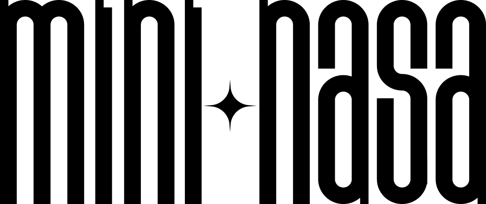
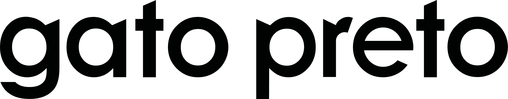
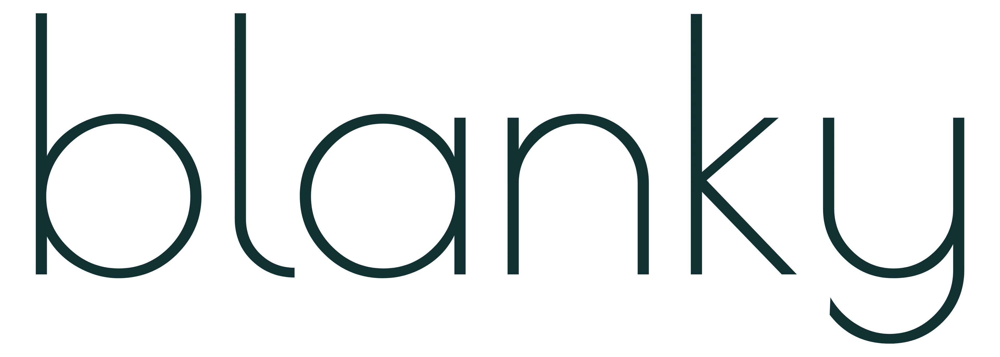
O que fazemos
Transformamos a tua lista de emails num ativo que gera resultados todos os dias. Criamos estratégias personalizadas que falam diretamente com cada cliente do teu negócio, desde o primeiro contacto até à compra recorrente.
Recuperamos carrinhos abandonados, aumentamos o ticket médio e valor de vida do cliente (LTV) e transformamos compradores ocasionais em fiéis da marca. Tudo com automações e campanhas que trabalham 24/7 enquanto te focas no teu negócio.
Como funciona
O primeiro passo é o notSPAM.check, um formulário que nos diz com que negócio estamos a falar. Se formos um match, enviamos-te o convite para uma conversa de 30 minutos onde fazemos o raio-x ao teu negócio. Percebemos onde estás, onde queres chegar e que oportunidades já existem (ou estão a ser desperdiçadas) na tua estratégia de email marketing.
Depois do notSPAM.check revelar o potencial do teu email marketing, damos vida à estratégia.
Transformamos dados em automações completas (carrinho abandonado, pós-compra, winback), campanhas semanais em momentos de relação e conversão. Estratégia, copy, design e implementação técnica, tudo incluído. Tu aprovas, nós executamos.
Processo
Analisamos o comportamento dos teus clientes para identificar onde estás a perder receita. Cada decisão é baseada em dados do teu negócio, não de fórmulas genéricas.
Carrinho abandonado, browse abandonment, pós-compra, winback. Recuperamos vendas que escapariam e transformamos compradores únicos em clientes recorrentes, tudo em piloto automático.
Segmentamos por comportamento, histórico de compra e preferências. Cada cliente recebe emails relevantes para ele. É por isso que abrem, clicam e compram.
Campanhas regulares mantêm a tua marca presente sem saturar. Educar, entreter e vender na dose certa, na frequência certa.
Testamos tudo: assuntos, horários, ofertas, design. Deixamos os dados guiarem as decisões. O que funciona fica, o que não funciona muda.
Monitorizamos o que realmente importa: receita por email, LTV, taxa de recompra. Métricas de vaidade ficam de fora, focamos no que impacta o teu negócio.
Emails que desenhámos
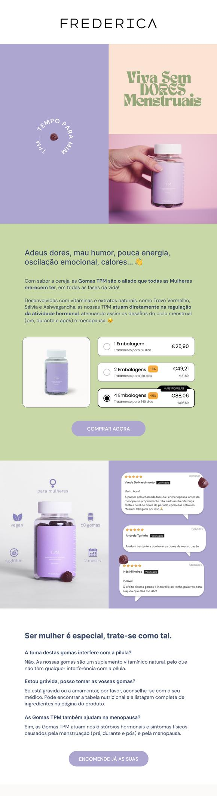
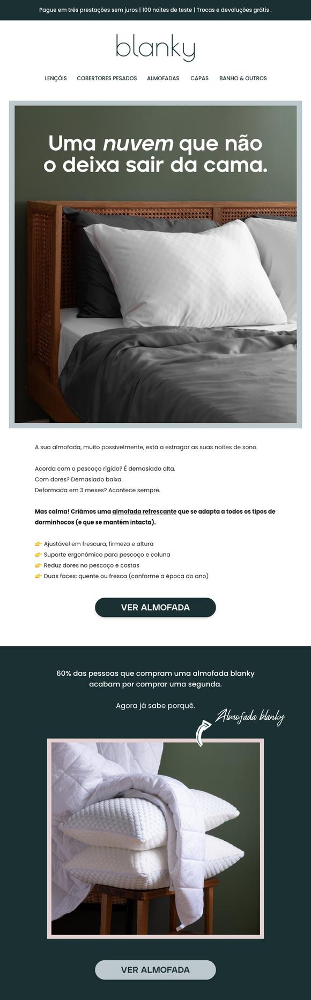
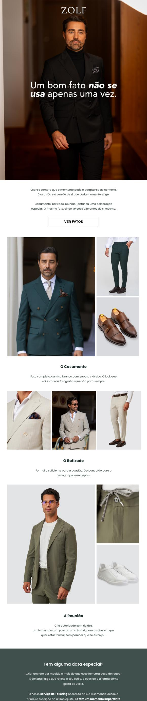
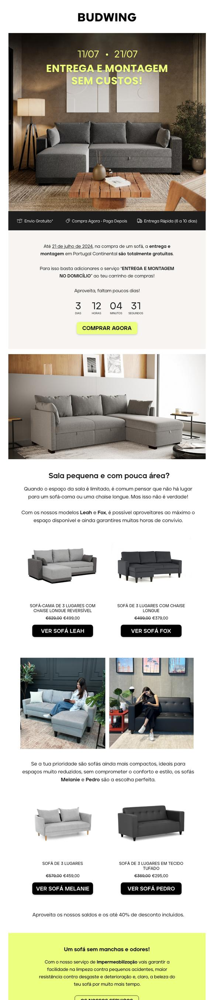
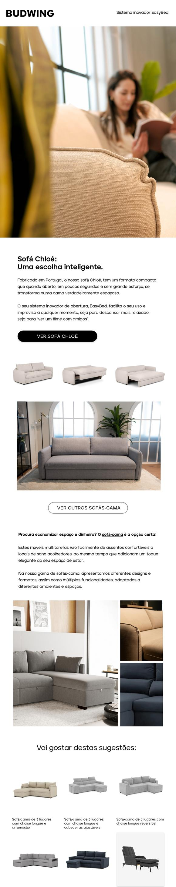
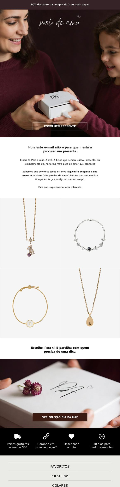
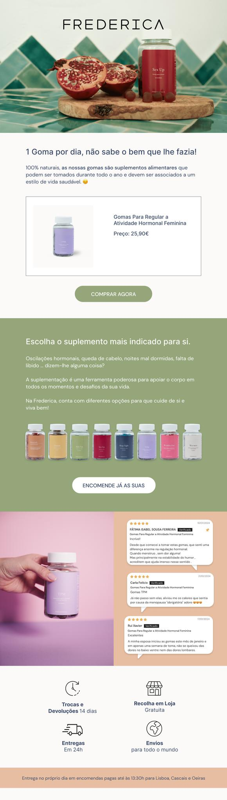
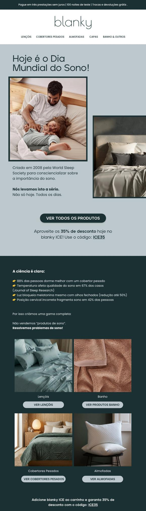
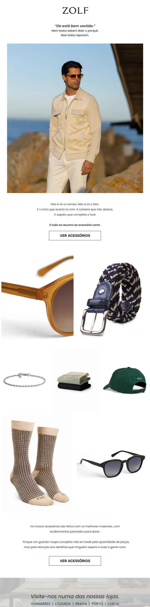
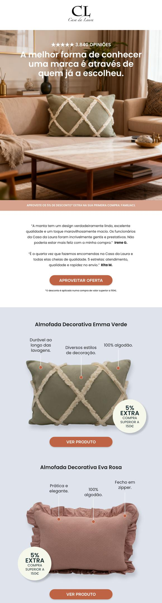
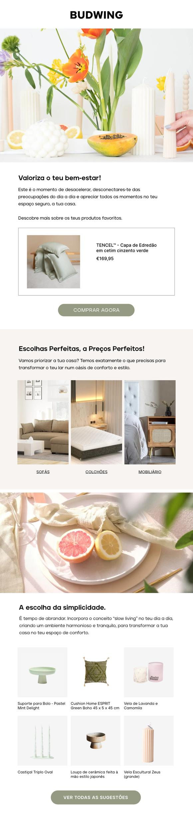
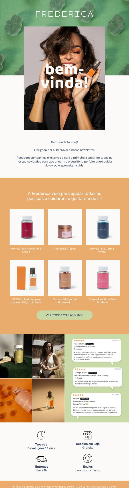
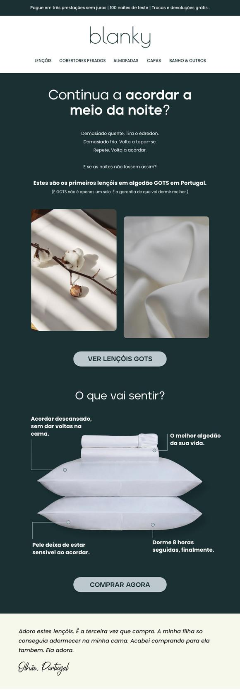
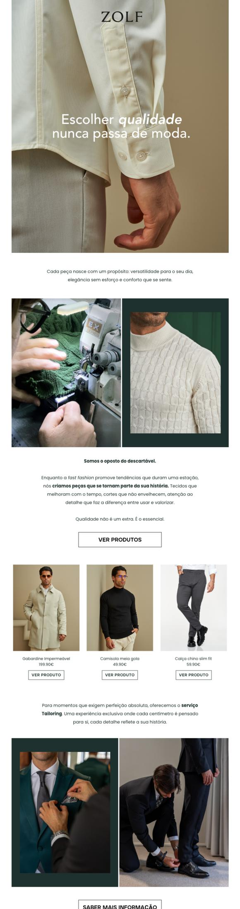
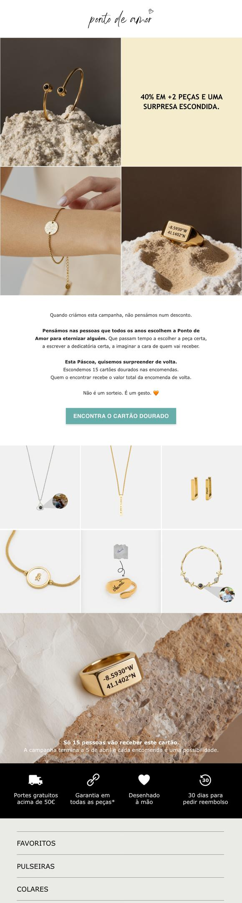
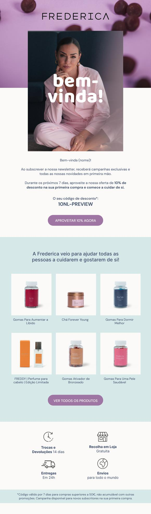
Para quem é
O notSPAM.studio é para donos de negócios que sentem que a sua estratégia de email marketing ficou para trás. Quer precises de uma estratégia do zero ou queiras otimizar o que já tens, vamos ajudar-te a transformar a tua lista num ativo que gera vendas todos os dias.
O que dizem de trabalhar com a notSPAM
Luis DiogoCEO, Mini-NasaCostumo apresentar a Adriana assim. Trabalho com ela há anos, NUNCA se atrasou numa entrega. Uma verdade que ainda continua. Consegue entregar volume e qualidade que não encontro em lado nenhum. É por isso que o email é dela em todas as minhas empresas. Obrigado pela tua obsessão, tem sido fundamental nos resultados.
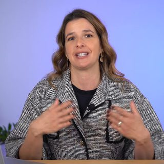
Ana GonçalvesConsultoria em Negócios de Saúde
Cátia SáE-commerce & Marketing ManagerRecomendo vivamente !
Desde de que trabalhamos com a Adriana muita coisa mudou na nossa forma de abordar e analisar o contacto com o cliente. Antes de o marketing automation ser uma prioridade para nós, o contacto que tinhamos com o cliente era meramente transacional, frio e genérico. A partir do momento em que a Adriana entrou na equação estratégica de pensar toda a comunicação connsoco passamos a deixar de enviar notificações aos nossos clientes e passsamos a ter uma verdadeira relaçao com eles.
Hoje em dia dificilmente algum negócio digital sobrevive sem uma compomente de email marketing bem definida, e a Adriana é sem dúvida a parceira estartégica perfeita para iniciar essa jornada.
Maria MaiaCEO, White DeerA Adriana é especial. É mesmo.
Tem uma sensibilidade que poucas pessoas têm.
Desde o primeiro dia que senti que havia alguma coisa ali de diferente. Extremamente preocupada com o cliente, paciente, eficaz e MUITO boa no que faz.É raríssimo, e falo por experiência própria, encontrar alguém tão bom naquilo que faz e que se note que o faz com amor. Uma profissional de excelência.
Não a poderia recomendar mais. A melhor
Daniela OliveiraCEO, RetryTrabalhar em parceria com a Adriana é dos maiores incrementos de valor que podes ter no teu negócio. Super profissional, dinâmica e pró-activa, sempre com ideias que se traduzem em resultados. E claro a nível pessoal 5 estrelas. Aconselho sem dúvida a quem queira crescer e optimizar o seu negócio que trabalhe com a Adriana.
Inês Guerra PereiraA Adriana é das pessoas mais cumpridoras que conheço. O que diz faz, a tempo e horas. Além da simpatia e qualidades humanas, destaco a criatividade e brevidade em encontrar soluções para os desafios que colocamos. Ajudou-me a organizar a minha base de dados e a conseguir óptimos resultados na comunicação via e-mail. Super recomendo para alavancar qualquer negócio!
Maria GamaFundadoraAdorei trabalhar com a Adriana: uma pessoa que além de profissional e empática, sempre esteve disponível para me ajudar e adaptar tudo o que era necessário perante as necessidades do negócio. Uma máquina do email marketing para potenciar qualquer negócio 💚
Perguntas frequentes
É um formulário curto. Serve para percebermos com que tipo e nicho de negócio estamos a falar e se é dos que trabalhamos. Se formos um match, recebes o convite para uma conversa de 30 minutos sobre o teu negócio: o que já tens a funcionar, onde estão as oportunidades e o que faz sentido fazer primeiro. Sem apresentação comercial e sem compromisso.
Depende do que precisas. Existem duas formas de trabalhar connosco: consultoria e avença. A consultoria é sobretudo para marcas que têm capacidade interna de implementação, mas precisam de um acompanhamento e olhar experiente para otimizar e crescer os resultados. A avença mensal é para quem precisa de delegar todo o email marketing (estratégia, copy, design e implementação). Todas as propostas são personalizadas consoante as necessidades do negócio.
Melhor. Começamos por analisar e validar o que está a funcionar e o que não está, e daí decidimos o que se corrige, o que se substitui e o que falta construir. Raramente se deita tudo fora.
Em lojas online: Klaviyo ou Omnisend. Negócios de serviços: GoHighLevel ou ActiveCampaign.
O que conta é a qualidade da lista e o nível de interação dos contactos. Uma lista menor, mas segmentada e composta por pessoas interessadas, pode gerar melhores resultados do que uma lista grande e sem interesse.
Recebes um relatório mensal com a receita gerada por email, campanha a campanha e automatismo a automatismo, e com as taxas de entrega, abertura, clique e cancelamento de subscrição, mais o crescimento da base. A receita é o que manda, o resto explica-a.
Trabalhamos com lojas online e negócios de serviços. A estratégia muda conforme o negócio, o método não.